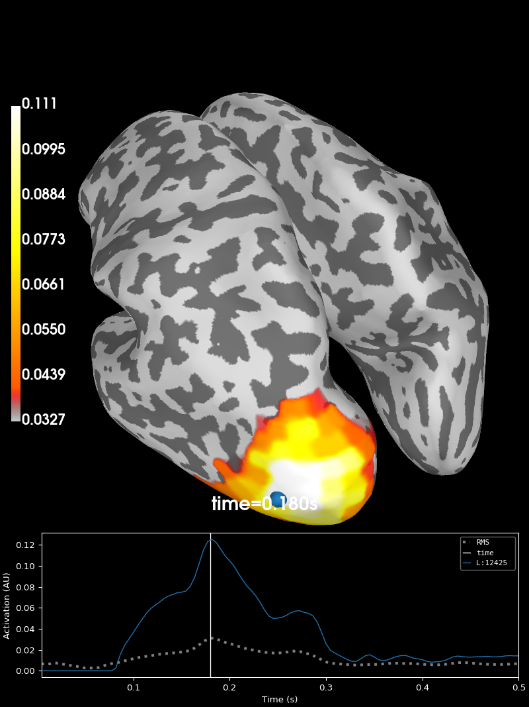
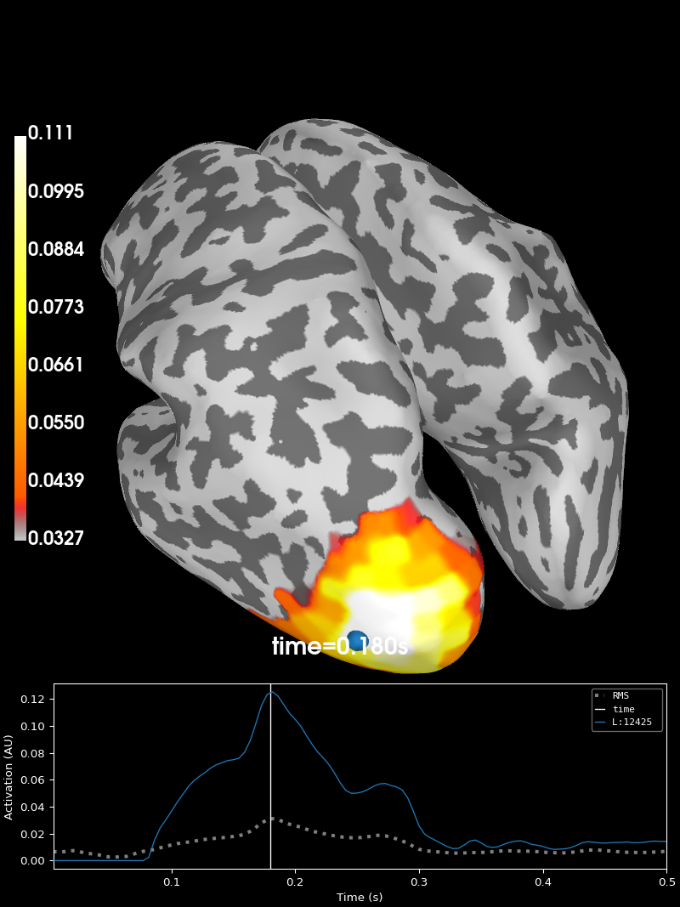

Note
Go to the end to download the full example code.
Tutorial part 2: RSA on source-level MEG data#
In this tutorial, we will perform source-level RSA analysis on MEG data.
If you haven’t done so, I recommend first completing Tutorial part 1: RSA on sensor-level MEG data.
While sensor-level RSA is useful to get a first impression of how neural representations unfold over time, it is not really suited to study differences between brain regions. For this, you want to so RSA in a searchlight pattern across the cortex.
The knowledge you have gained from your sensor-level analysis will serve you well for this part, as the API of MNE-RSA is mostly the same across sensor- and source-level analysis. However, performing a searchlight analysis is a heavy computation that can take a lot of time. Hence, we will also learn about the API regarding restricting the analysis to parts of the data in several ways.
In the cell below, update the data_path variable to point to where you have
extracted the rsa-data.zip
file to.
# ruff: noqa: E402
# sphinx_gallery_thumbnail_number=3
# Set this to where you've extracted `data.zip` to
data_path = "data"
We’ll start by loading the epochs again, but this time, we will restrict them to
only two experimental conditions: the first presentations of famous faces versus
scrambled faces. This will reduce the number of rows/columns in our RDMs and hence
speed up computing and comparing them.
import mne
epochs = mne.read_epochs(f"{data_path}/sub-02/sub-02-epo.fif")
epochs = epochs[["face/famous/first", "scrambled/first"]]
epochs
When we select a subset of epochs, the epochs.metadata field is likewise updated
to match the new selection. This feature is one of the main reasons to use the
.metadata field instead of keeping a separate pandas.DataFrame manually.
epochs.metadata.info()
<class 'pandas.core.frame.DataFrame'>
Index: 297 entries, 4 to 884
Data columns (total 2 columns):
# Column Non-Null Count Dtype
--- ------ -------------- -----
0 trigger 297 non-null int64
1 file 297 non-null object
dtypes: int64(1), object(1)
memory usage: 7.0+ KB
This means we can use the epochs.metadata["file"] column to restrict the pixel and
FaceNet RDMs to just those images still present in the MEG data.
In the cell below, we read the images and FaceNet embeddings and select the proper
rows from the data matrices and use compute_dsm to compute the appropriate RDMs.
from glob import glob
import numpy as np
from PIL import Image
files = sorted(glob(f"{data_path}/stimuli/*.bmp"))
pixels = np.array([np.array(Image.open(f)) for f in files])
store = np.load(f"{data_path}/stimuli/facenet_embeddings.npz")
filenames = store["filenames"]
embeddings = store["embeddings"]
# Select the proper filenames
epochs_filenames = set(epochs.metadata["file"])
selection = [f in epochs_filenames for f in filenames]
filenames = filenames[selection]
# Select the proper rows from `pixels` and `embeddings` and compute the RDMs.
from mne_rsa import compute_rdm
pixel_rdm = compute_rdm(pixels[selection])
facenet_rdm = compute_rdm(embeddings[selection])
Executing the cell below will test whether the RDMs have been properly constructed and plot them.
from mne_rsa import plot_rdms
from scipy.spatial.distance import squareform
if len(pixel_rdm) != len(facenet_rdm):
print("The pixel and FaceNet RDMs are of difference sizes, that can't be right. 🤔")
elif len(pixel_rdm) != 43956:
print("Looks like the RDMs do not have the correct rows. 🤔")
elif (
squareform(pixel_rdm)[:150, :150].mean() >= squareform(pixel_rdm)[150:, 150:].mean()
):
print(
"The pixels RDM doesn't look quite right. Make sure the rows are in "
"alphabetical filename order. 🤔"
)
elif (
squareform(facenet_rdm)[:150, :150].mean()
<= squareform(facenet_rdm)[150:, 150:].mean()
):
print(
"The FaceNet RDM doesn't look quite right. Make sure the rows are in "
"alphabetical filename order. 🤔"
)
else:
print("The RDMs look just right! 😊")
plot_rdms([pixel_rdm, facenet_rdm], names=["pixels", "facenet"])
The RDMs look just right! 😊
To source space!#
In order to perform RSA in source space, we must create source estimates for the epochs. There’s many different ways to do this, for example you’ll learn about beamformers during this workshop, but here we’re going to use the one that is fastest. If we use MNE, we can use a pre-computed inverse operator and apply it to the epochs to quickly get source estimates.
from mne.minimum_norm import apply_inverse_epochs, read_inverse_operator
inv = read_inverse_operator(f"{data_path}/sub-02/sub-02-inv.fif")
stcs = apply_inverse_epochs(epochs, inv, lambda2=1 / 9)
The result is a list of 297 SourceEstimate objects. Here are the
first 5 of them:
stcs[:5]
[<SourceEstimate | 2050 vertices, subject : sub-02, tmin : -200.0 (ms), tmax : 2899.9999999999995 (ms), tstep : 4.545454545454545 (ms), data shape : (2050, 683), ~10.7 MiB>, <SourceEstimate | 2050 vertices, subject : sub-02, tmin : -200.0 (ms), tmax : 2899.9999999999995 (ms), tstep : 4.545454545454545 (ms), data shape : (2050, 683), ~10.7 MiB>, <SourceEstimate | 2050 vertices, subject : sub-02, tmin : -200.0 (ms), tmax : 2899.9999999999995 (ms), tstep : 4.545454545454545 (ms), data shape : (2050, 683), ~10.7 MiB>, <SourceEstimate | 2050 vertices, subject : sub-02, tmin : -200.0 (ms), tmax : 2899.9999999999995 (ms), tstep : 4.545454545454545 (ms), data shape : (2050, 683), ~10.7 MiB>, <SourceEstimate | 2050 vertices, subject : sub-02, tmin : -200.0 (ms), tmax : 2899.9999999999995 (ms), tstep : 4.545454545454545 (ms), data shape : (2050, 683), ~10.7 MiB>]
The plan is to perform RSA in a searchlight pattern, not only as a sliding window
through time, but also sliding across different locations across the cortex. To this
end, we’ll define spatial patches with a certain radius, and only source points that
fall within a patch are taken into account when computing the RDM for that patch. The
cortex is heavily folded and ideally we define distances between source point as the
shortest path along the cortex, what is known as the geodesic distance, rather than
straight euclidean distance between the XYZ coordinates. MNE-Python is here to help us
out in this regard, as it contains a function to compute such distances and store them
within the mne.SourceSpaces object (through the
mne.add_source_space_distances() function).
Let’s load the file containing the proper source space with pre-computed geodesic distances between source points:
from mne import read_source_spaces
src = read_source_spaces(f"{data_path}/freesurfer/sub-02/bem/sub-02-oct5-src.fif")
To speed things up, let’s restrict the analysis to only the occipital, parietal and
temporal areas on the left hemisphere. There are several ways to tell MNE-RSA which
source points to use, and one of the most convenient ones is to use mne.Label
objects. This allows us to define the desired areas using the “aparc” atlas that
FreeSurfer has constructed for us:
rois = mne.read_labels_from_annot(
"sub-02", parc="aparc", subjects_dir=f"{data_path}/freesurfer", hemi="lh"
)
# These are the regions we're interested in
roi_sel = [
"inferiortemporal-lh",
"middletemporal-lh",
"fusiform-lh",
"bankssts-lh",
"inferiorparietal-lh",
"lateraloccipital-lh",
"lingual-lh",
"pericalcarine-lh",
"cuneus-lh",
"supramarginal-lh",
"superiorparietal-lh",
]
rois = [r for r in rois if r.name in roi_sel]
Source-space RSA#
Time to actually perform the RSA in source space. The function you need is
mne_rsa.rsa_stcs() Take a look at the documentation of that function, which
should look familiar is it is very similar to mne_rsa.rsa_epochs() that you have
used before.
We will perform RSA on the source estimates, using the pixel and FaceNet RDMs as model
RDMs. As was the case with the sensor-level RSA, we will need specify labels to
indicate which image was shown during which epoch and which image corresponds to each
row/column of the pixel_rdm and facenet_rdm. We will use the filenames for
this.
Searchlight patches swill have a spatial radius of 2cm (=0.02 meters) and a
temporal radius of 50 ms (=0.05 seconds). We will restrict the analysis to 0.0 to 0.5
seconds after stimulus onset and to the cortical regions (rois) we’ve selected
above. We can optionally set n_jobs=-1 to use all CPU cores and verbose=True
to show a progress bar.
Depending on the speed of your computer, this may take anywhere from a few seconds to a few minutes to complete.
Restricting source space to 2050 out of [1026 1026] vertices.
Restricting source space to 2050 out of [1025 1025] vertices.
Performing RSA between SourceEstimates and 2 model RDM(s)
Spatial radius: 0.02 meters
Using 373 vertices
Temporal radius: 11 samples
Time interval: 0-0.5 seconds
Number of searchlight patches: 41030
0%| | 0/41030 [00:00<?, ?patch/s]Creating spatio-temporal searchlight patches
0%| | 8/41030 [00:02<3:46:26, 3.02patch/s]
0%| | 12/41030 [00:02<2:20:52, 4.85patch/s]
0%| | 44/41030 [00:02<26:22, 25.90patch/s]
0%| | 108/41030 [00:02<08:39, 78.83patch/s]
0%| | 204/41030 [00:03<04:05, 166.25patch/s]
1%| | 268/41030 [00:03<03:11, 213.21patch/s]
1%| | 332/41030 [00:03<02:39, 254.58patch/s]
1%| | 396/41030 [00:03<02:23, 284.04patch/s]
1%| | 460/41030 [00:03<02:08, 315.39patch/s]
1%|▏ | 524/41030 [00:04<02:13, 303.53patch/s]
1%|▏ | 588/41030 [00:04<02:00, 334.85patch/s]
2%|▏ | 652/41030 [00:04<01:52, 358.91patch/s]
2%|▏ | 716/41030 [00:04<01:50, 366.17patch/s]
2%|▏ | 780/41030 [00:04<01:48, 369.87patch/s]
2%|▏ | 844/41030 [00:04<01:47, 374.06patch/s]
2%|▏ | 908/41030 [00:04<01:46, 376.59patch/s]
2%|▏ | 972/41030 [00:05<01:58, 338.28patch/s]
3%|▎ | 1036/41030 [00:05<01:46, 373.82patch/s]
3%|▎ | 1100/41030 [00:05<01:39, 401.09patch/s]
3%|▎ | 1164/41030 [00:05<01:42, 388.69patch/s]
3%|▎ | 1228/41030 [00:05<01:41, 392.43patch/s]
3%|▎ | 1292/41030 [00:05<01:40, 396.10patch/s]
3%|▎ | 1356/41030 [00:06<01:34, 421.67patch/s]
3%|▎ | 1420/41030 [00:06<01:42, 386.74patch/s]
4%|▎ | 1484/41030 [00:06<01:43, 380.88patch/s]
4%|▍ | 1548/41030 [00:06<01:44, 378.34patch/s]
4%|▍ | 1612/41030 [00:06<01:45, 374.51patch/s]
4%|▍ | 1676/41030 [00:06<01:41, 389.13patch/s]
4%|▍ | 1740/41030 [00:07<01:38, 400.76patch/s]
4%|▍ | 1804/41030 [00:07<01:38, 398.70patch/s]
5%|▍ | 1868/41030 [00:07<01:44, 373.00patch/s]
5%|▍ | 1932/41030 [00:07<01:45, 369.26patch/s]
5%|▍ | 1996/41030 [00:07<01:43, 375.85patch/s]
5%|▌ | 2060/41030 [00:07<01:41, 383.40patch/s]
5%|▌ | 2124/41030 [00:08<01:38, 394.20patch/s]
5%|▌ | 2188/41030 [00:08<01:43, 374.44patch/s]
5%|▌ | 2252/41030 [00:08<01:49, 353.02patch/s]
6%|▌ | 2316/41030 [00:08<01:59, 323.25patch/s]
6%|▌ | 2380/41030 [00:08<01:48, 354.59patch/s]
6%|▌ | 2444/41030 [00:09<01:42, 376.82patch/s]
6%|▌ | 2508/41030 [00:09<01:38, 392.40patch/s]
6%|▋ | 2572/41030 [00:09<01:38, 389.63patch/s]
6%|▋ | 2636/41030 [00:09<01:39, 385.53patch/s]
7%|▋ | 2700/41030 [00:09<01:42, 374.32patch/s]
7%|▋ | 2764/41030 [00:09<01:51, 341.99patch/s]
7%|▋ | 2828/41030 [00:10<01:48, 352.81patch/s]
7%|▋ | 2892/41030 [00:10<01:50, 345.54patch/s]
7%|▋ | 2956/41030 [00:10<01:52, 338.92patch/s]
7%|▋ | 3020/41030 [00:10<01:46, 355.50patch/s]
8%|▊ | 3084/41030 [00:10<01:51, 341.06patch/s]
8%|▊ | 3148/41030 [00:11<01:51, 339.35patch/s]
8%|▊ | 3212/41030 [00:11<01:53, 334.19patch/s]
8%|▊ | 3276/41030 [00:11<01:53, 332.25patch/s]
8%|▊ | 3340/41030 [00:11<01:47, 352.06patch/s]
8%|▊ | 3404/41030 [00:11<01:43, 362.45patch/s]
8%|▊ | 3468/41030 [00:12<01:55, 324.29patch/s]
9%|▊ | 3532/41030 [00:12<01:53, 330.09patch/s]
9%|▉ | 3596/41030 [00:12<01:52, 332.62patch/s]
9%|▉ | 3660/41030 [00:12<01:46, 352.06patch/s]
9%|▉ | 3724/41030 [00:12<01:40, 369.52patch/s]
9%|▉ | 3788/41030 [00:12<01:40, 369.20patch/s]
9%|▉ | 3852/41030 [00:13<01:46, 350.17patch/s]
10%|▉ | 3916/41030 [00:13<02:01, 304.40patch/s]
10%|▉ | 3980/41030 [00:13<01:58, 311.61patch/s]
10%|▉ | 4044/41030 [00:13<01:55, 319.74patch/s]
10%|█ | 4108/41030 [00:13<01:47, 342.23patch/s]
10%|█ | 4172/41030 [00:14<01:44, 352.15patch/s]
10%|█ | 4236/41030 [00:14<01:39, 371.02patch/s]
10%|█ | 4300/41030 [00:14<01:45, 349.24patch/s]
11%|█ | 4364/41030 [00:14<01:36, 378.55patch/s]
11%|█ | 4428/41030 [00:14<01:37, 375.27patch/s]
11%|█ | 4492/41030 [00:14<01:38, 371.07patch/s]
11%|█ | 4556/41030 [00:15<01:43, 352.03patch/s]
11%|█▏ | 4620/41030 [00:15<01:44, 347.20patch/s]
11%|█▏ | 4684/41030 [00:15<01:50, 330.04patch/s]
12%|█▏ | 4748/41030 [00:15<01:41, 358.23patch/s]
12%|█▏ | 4812/41030 [00:15<01:34, 383.51patch/s]
12%|█▏ | 4876/41030 [00:15<01:30, 397.76patch/s]
12%|█▏ | 4940/41030 [00:16<01:29, 404.24patch/s]
12%|█▏ | 5004/41030 [00:16<01:38, 366.75patch/s]
12%|█▏ | 5068/41030 [00:16<01:41, 354.89patch/s]
13%|█▎ | 5132/41030 [00:16<01:55, 309.75patch/s]
13%|█▎ | 5196/41030 [00:16<01:55, 310.79patch/s]
13%|█▎ | 5260/41030 [00:17<01:55, 309.54patch/s]
13%|█▎ | 5324/41030 [00:17<01:58, 302.01patch/s]
13%|█▎ | 5388/41030 [00:17<01:59, 297.36patch/s]
13%|█▎ | 5452/41030 [00:17<02:02, 289.50patch/s]
13%|█▎ | 5516/41030 [00:18<02:01, 291.64patch/s]
14%|█▎ | 5580/41030 [00:18<02:02, 290.06patch/s]
14%|█▍ | 5644/41030 [00:18<01:50, 320.59patch/s]
14%|█▍ | 5708/41030 [00:18<01:42, 344.39patch/s]
14%|█▍ | 5772/41030 [00:18<01:42, 343.87patch/s]
14%|█▍ | 5836/41030 [00:19<01:52, 313.80patch/s]
14%|█▍ | 5900/41030 [00:19<01:39, 352.61patch/s]
15%|█▍ | 5964/41030 [00:19<01:41, 345.48patch/s]
15%|█▍ | 6028/41030 [00:19<01:47, 326.83patch/s]
15%|█▍ | 6092/41030 [00:19<01:46, 328.70patch/s]
15%|█▌ | 6156/41030 [00:19<01:44, 334.82patch/s]
15%|█▌ | 6220/41030 [00:20<02:01, 286.61patch/s]
15%|█▌ | 6284/41030 [00:20<01:59, 290.29patch/s]
15%|█▌ | 6348/41030 [00:20<01:57, 295.75patch/s]
16%|█▌ | 6412/41030 [00:20<01:47, 321.76patch/s]
16%|█▌ | 6476/41030 [00:20<01:41, 341.40patch/s]
16%|█▌ | 6540/41030 [00:21<01:49, 315.30patch/s]
16%|█▌ | 6604/41030 [00:21<01:46, 323.66patch/s]
16%|█▋ | 6668/41030 [00:21<01:47, 320.25patch/s]
16%|█▋ | 6732/41030 [00:21<01:41, 337.31patch/s]
17%|█▋ | 6796/41030 [00:21<01:37, 352.60patch/s]
17%|█▋ | 6860/41030 [00:22<01:36, 354.31patch/s]
17%|█▋ | 6924/41030 [00:22<01:44, 326.09patch/s]
17%|█▋ | 6988/41030 [00:22<01:50, 308.58patch/s]
17%|█▋ | 7052/41030 [00:22<01:48, 314.44patch/s]
17%|█▋ | 7116/41030 [00:22<01:42, 331.90patch/s]
17%|█▋ | 7180/41030 [00:23<01:41, 334.57patch/s]
18%|█▊ | 7244/41030 [00:23<01:46, 317.07patch/s]
18%|█▊ | 7308/41030 [00:23<01:38, 343.60patch/s]
18%|█▊ | 7372/41030 [00:23<01:38, 341.77patch/s]
18%|█▊ | 7436/41030 [00:23<01:38, 341.27patch/s]
18%|█▊ | 7500/41030 [00:24<01:35, 349.49patch/s]
18%|█▊ | 7564/41030 [00:24<01:32, 362.30patch/s]
19%|█▊ | 7628/41030 [00:24<01:46, 314.09patch/s]
19%|█▊ | 7692/41030 [00:24<01:46, 313.83patch/s]
19%|█▉ | 7756/41030 [00:24<01:47, 308.60patch/s]
19%|█▉ | 7820/41030 [00:25<01:55, 287.04patch/s]
19%|█▉ | 7884/41030 [00:25<01:53, 291.61patch/s]
19%|█▉ | 7948/41030 [00:25<01:51, 296.11patch/s]
20%|█▉ | 8012/41030 [00:25<01:41, 325.76patch/s]
20%|█▉ | 8076/41030 [00:25<01:37, 339.24patch/s]
20%|█▉ | 8140/41030 [00:26<01:34, 348.43patch/s]
20%|█▉ | 8204/41030 [00:26<01:39, 328.80patch/s]
20%|██ | 8268/41030 [00:26<01:42, 320.36patch/s]
20%|██ | 8332/41030 [00:26<01:52, 289.45patch/s]
20%|██ | 8396/41030 [00:27<01:51, 293.65patch/s]
21%|██ | 8460/41030 [00:27<01:49, 296.20patch/s]
21%|██ | 8524/41030 [00:27<01:36, 335.42patch/s]
21%|██ | 8588/41030 [00:27<01:33, 348.23patch/s]
21%|██ | 8652/41030 [00:27<01:32, 349.99patch/s]
21%|██ | 8716/41030 [00:27<01:33, 345.58patch/s]
21%|██▏ | 8780/41030 [00:28<01:27, 370.07patch/s]
22%|██▏ | 8844/41030 [00:28<01:34, 339.23patch/s]
22%|██▏ | 8908/41030 [00:28<01:45, 304.54patch/s]
22%|██▏ | 8972/41030 [00:28<01:54, 280.42patch/s]
22%|██▏ | 9036/41030 [00:29<01:53, 282.54patch/s]
22%|██▏ | 9100/41030 [00:29<02:02, 260.55patch/s]
22%|██▏ | 9164/41030 [00:29<01:55, 276.99patch/s]
22%|██▏ | 9228/41030 [00:29<01:47, 295.71patch/s]
23%|██▎ | 9292/41030 [00:29<01:40, 315.18patch/s]
23%|██▎ | 9356/41030 [00:30<01:37, 323.60patch/s]
23%|██▎ | 9420/41030 [00:30<01:39, 319.03patch/s]
23%|██▎ | 9484/41030 [00:30<01:48, 291.73patch/s]
23%|██▎ | 9548/41030 [00:30<01:45, 297.92patch/s]
23%|██▎ | 9612/41030 [00:30<01:47, 292.40patch/s]
24%|██▎ | 9676/41030 [00:31<01:48, 287.91patch/s]
24%|██▎ | 9740/41030 [00:31<01:38, 318.01patch/s]
24%|██▍ | 9804/41030 [00:31<01:46, 291.97patch/s]
24%|██▍ | 9868/41030 [00:31<01:45, 294.86patch/s]
24%|██▍ | 9932/41030 [00:32<01:49, 285.22patch/s]
24%|██▍ | 9996/41030 [00:32<01:46, 290.74patch/s]
25%|██▍ | 10060/41030 [00:32<01:34, 328.26patch/s]
25%|██▍ | 10124/41030 [00:32<01:24, 364.74patch/s]
25%|██▍ | 10188/41030 [00:32<01:23, 367.40patch/s]
25%|██▍ | 10252/41030 [00:32<01:32, 331.03patch/s]
25%|██▌ | 10316/41030 [00:33<01:47, 284.62patch/s]
25%|██▌ | 10380/41030 [00:33<01:43, 294.83patch/s]
25%|██▌ | 10444/41030 [00:33<01:41, 301.92patch/s]
26%|██▌ | 10508/41030 [00:33<01:38, 308.66patch/s]
26%|██▌ | 10572/41030 [00:34<01:38, 308.80patch/s]
26%|██▌ | 10636/41030 [00:34<01:50, 274.58patch/s]
26%|██▌ | 10700/41030 [00:34<01:38, 308.68patch/s]
26%|██▌ | 10764/41030 [00:34<01:28, 340.16patch/s]
26%|██▋ | 10828/41030 [00:34<01:31, 329.08patch/s]
27%|██▋ | 10892/41030 [00:35<01:33, 323.55patch/s]
27%|██▋ | 10956/41030 [00:35<01:27, 345.07patch/s]
27%|██▋ | 11020/41030 [00:35<01:24, 356.14patch/s]
27%|██▋ | 11084/41030 [00:35<01:17, 388.73patch/s]
27%|██▋ | 11148/41030 [00:35<01:15, 395.06patch/s]
27%|██▋ | 11212/41030 [00:35<01:15, 396.54patch/s]
27%|██▋ | 11276/41030 [00:35<01:16, 390.12patch/s]
28%|██▊ | 11340/41030 [00:36<01:26, 341.49patch/s]
28%|██▊ | 11404/41030 [00:36<01:31, 324.03patch/s]
28%|██▊ | 11468/41030 [00:36<01:35, 309.59patch/s]
28%|██▊ | 11532/41030 [00:36<01:29, 330.71patch/s]
28%|██▊ | 11596/41030 [00:37<01:29, 328.97patch/s]
28%|██▊ | 11660/41030 [00:37<01:30, 324.82patch/s]
29%|██▊ | 11724/41030 [00:37<01:21, 357.75patch/s]
29%|██▊ | 11788/41030 [00:37<01:30, 322.51patch/s]
29%|██▉ | 11852/41030 [00:37<01:36, 302.45patch/s]
29%|██▉ | 11916/41030 [00:38<01:33, 310.04patch/s]
29%|██▉ | 11980/41030 [00:38<01:32, 314.96patch/s]
29%|██▉ | 12044/41030 [00:38<01:43, 280.88patch/s]
30%|██▉ | 12108/41030 [00:38<01:37, 296.78patch/s]
30%|██▉ | 12172/41030 [00:38<01:28, 325.62patch/s]
30%|██▉ | 12236/41030 [00:39<01:22, 349.37patch/s]
30%|██▉ | 12300/41030 [00:39<01:17, 370.40patch/s]
30%|███ | 12364/41030 [00:39<01:24, 337.46patch/s]
30%|███ | 12428/41030 [00:39<01:45, 270.52patch/s]
30%|███ | 12492/41030 [00:39<01:46, 268.79patch/s]
31%|███ | 12556/41030 [00:40<01:47, 264.41patch/s]
31%|███ | 12620/41030 [00:40<01:48, 262.78patch/s]
31%|███ | 12684/41030 [00:40<01:47, 263.65patch/s]
31%|███ | 12748/41030 [00:40<01:50, 255.37patch/s]
31%|███ | 12812/41030 [00:41<01:40, 281.30patch/s]
31%|███▏ | 12876/41030 [00:41<01:36, 292.52patch/s]
32%|███▏ | 12940/41030 [00:41<01:37, 288.49patch/s]
32%|███▏ | 13004/41030 [00:41<01:33, 299.29patch/s]
32%|███▏ | 13068/41030 [00:41<01:21, 341.47patch/s]
32%|███▏ | 13132/41030 [00:42<01:16, 364.45patch/s]
32%|███▏ | 13196/41030 [00:42<01:11, 389.46patch/s]
32%|███▏ | 13260/41030 [00:42<01:17, 358.70patch/s]
32%|███▏ | 13324/41030 [00:42<01:18, 352.36patch/s]
33%|███▎ | 13388/41030 [00:42<01:15, 364.30patch/s]
33%|███▎ | 13452/41030 [00:42<01:24, 324.94patch/s]
33%|███▎ | 13516/41030 [00:43<01:25, 322.57patch/s]
33%|███▎ | 13580/41030 [00:43<01:28, 311.17patch/s]
33%|███▎ | 13644/41030 [00:43<01:34, 289.44patch/s]
33%|███▎ | 13708/41030 [00:43<01:33, 290.99patch/s]
34%|███▎ | 13772/41030 [00:44<01:35, 285.93patch/s]
34%|███▎ | 13836/41030 [00:44<01:35, 284.18patch/s]
34%|███▍ | 13900/41030 [00:44<01:28, 305.05patch/s]
34%|███▍ | 13964/41030 [00:44<01:29, 302.74patch/s]
34%|███▍ | 14028/41030 [00:44<01:25, 314.40patch/s]
34%|███▍ | 14092/41030 [00:45<01:20, 333.86patch/s]
35%|███▍ | 14156/41030 [00:45<01:23, 323.70patch/s]
35%|███▍ | 14220/41030 [00:45<01:18, 340.68patch/s]
35%|███▍ | 14284/41030 [00:45<01:15, 355.56patch/s]
35%|███▍ | 14348/41030 [00:45<01:13, 361.27patch/s]
35%|███▌ | 14412/41030 [00:45<01:14, 355.95patch/s]
35%|███▌ | 14476/41030 [00:46<01:23, 318.84patch/s]
35%|███▌ | 14540/41030 [00:46<01:32, 286.39patch/s]
36%|███▌ | 14604/41030 [00:46<01:31, 287.71patch/s]
36%|███▌ | 14668/41030 [00:46<01:32, 284.75patch/s]
36%|███▌ | 14732/41030 [00:47<01:40, 260.82patch/s]
36%|███▌ | 14796/41030 [00:47<01:30, 288.40patch/s]
36%|███▌ | 14860/41030 [00:47<01:22, 317.05patch/s]
36%|███▋ | 14924/41030 [00:47<01:15, 347.16patch/s]
37%|███▋ | 14988/41030 [00:47<01:22, 313.97patch/s]
37%|███▋ | 15052/41030 [00:48<01:22, 315.07patch/s]
37%|███▋ | 15116/41030 [00:48<01:29, 290.64patch/s]
37%|███▋ | 15180/41030 [00:48<01:31, 282.01patch/s]
37%|███▋ | 15244/41030 [00:48<01:25, 302.12patch/s]
37%|███▋ | 15308/41030 [00:49<01:18, 326.32patch/s]
37%|███▋ | 15372/41030 [00:49<01:14, 343.99patch/s]
38%|███▊ | 15436/41030 [00:49<01:13, 350.29patch/s]
38%|███▊ | 15500/41030 [00:49<01:18, 326.08patch/s]
38%|███▊ | 15564/41030 [00:49<01:16, 330.96patch/s]
38%|███▊ | 15628/41030 [00:49<01:13, 347.95patch/s]
38%|███▊ | 15692/41030 [00:50<01:08, 372.17patch/s]
38%|███▊ | 15756/41030 [00:50<01:10, 360.82patch/s]
39%|███▊ | 15820/41030 [00:50<01:12, 348.34patch/s]
39%|███▊ | 15884/41030 [00:50<01:19, 314.99patch/s]
39%|███▉ | 15948/41030 [00:50<01:24, 298.03patch/s]
39%|███▉ | 16012/41030 [00:51<01:27, 286.07patch/s]
39%|███▉ | 16076/41030 [00:51<01:23, 297.95patch/s]
39%|███▉ | 16140/41030 [00:51<01:15, 330.75patch/s]
39%|███▉ | 16204/41030 [00:51<01:11, 347.91patch/s]
40%|███▉ | 16268/41030 [00:51<01:11, 347.99patch/s]
40%|███▉ | 16332/41030 [00:52<01:15, 328.58patch/s]
40%|███▉ | 16396/41030 [00:52<01:12, 339.52patch/s]
40%|████ | 16460/41030 [00:52<01:14, 331.20patch/s]
40%|████ | 16524/41030 [00:52<01:13, 333.93patch/s]
40%|████ | 16588/41030 [00:52<01:13, 333.10patch/s]
41%|████ | 16652/41030 [00:53<01:19, 308.32patch/s]
41%|████ | 16716/41030 [00:53<01:31, 265.26patch/s]
41%|████ | 16780/41030 [00:53<01:30, 267.29patch/s]
41%|████ | 16844/41030 [00:53<01:33, 259.79patch/s]
41%|████ | 16908/41030 [00:54<01:34, 254.25patch/s]
41%|████▏ | 16972/41030 [00:54<01:36, 250.16patch/s]
42%|████▏ | 17036/41030 [00:54<01:28, 270.33patch/s]
42%|████▏ | 17100/41030 [00:54<01:24, 283.89patch/s]
42%|████▏ | 17164/41030 [00:55<01:21, 291.91patch/s]
42%|████▏ | 17228/41030 [00:55<01:24, 281.56patch/s]
42%|████▏ | 17292/41030 [00:55<01:26, 273.39patch/s]
42%|████▏ | 17356/41030 [00:55<01:19, 296.72patch/s]
42%|████▏ | 17420/41030 [00:55<01:14, 316.18patch/s]
43%|████▎ | 17484/41030 [00:56<01:11, 331.07patch/s]
43%|████▎ | 17548/41030 [00:56<01:17, 304.84patch/s]
43%|████▎ | 17612/41030 [00:56<01:19, 295.57patch/s]
43%|████▎ | 17676/41030 [00:56<01:23, 279.12patch/s]
43%|████▎ | 17740/41030 [00:57<01:24, 276.96patch/s]
43%|████▎ | 17804/41030 [00:57<01:23, 278.15patch/s]
44%|████▎ | 17868/41030 [00:57<01:27, 264.81patch/s]
44%|████▎ | 17932/41030 [00:57<01:22, 280.01patch/s]
44%|████▍ | 17996/41030 [00:57<01:12, 318.45patch/s]
44%|████▍ | 18060/41030 [00:58<01:17, 297.06patch/s]
44%|████▍ | 18124/41030 [00:58<01:20, 283.13patch/s]
44%|████▍ | 18188/41030 [00:58<01:25, 268.04patch/s]
44%|████▍ | 18252/41030 [00:58<01:22, 276.16patch/s]
45%|████▍ | 18316/41030 [00:59<01:19, 285.95patch/s]
45%|████▍ | 18380/41030 [00:59<01:18, 288.83patch/s]
45%|████▍ | 18444/41030 [00:59<01:18, 287.91patch/s]
45%|████▌ | 18508/41030 [00:59<01:18, 285.70patch/s]
45%|████▌ | 18572/41030 [00:59<01:15, 296.20patch/s]
45%|████▌ | 18636/41030 [01:00<01:15, 298.55patch/s]
46%|████▌ | 18700/41030 [01:00<01:14, 298.15patch/s]
46%|████▌ | 18764/41030 [01:00<01:12, 306.26patch/s]
46%|████▌ | 18828/41030 [01:00<01:12, 306.22patch/s]
46%|████▌ | 18892/41030 [01:01<01:18, 281.42patch/s]
46%|████▌ | 18956/41030 [01:01<01:13, 302.29patch/s]
46%|████▋ | 19020/41030 [01:01<01:08, 322.48patch/s]
47%|████▋ | 19084/41030 [01:01<01:11, 305.66patch/s]
47%|████▋ | 19148/41030 [01:01<01:11, 306.71patch/s]
47%|████▋ | 19212/41030 [01:01<01:03, 344.44patch/s]
47%|████▋ | 19276/41030 [01:02<01:04, 339.88patch/s]
47%|████▋ | 19340/41030 [01:02<01:03, 342.52patch/s]
47%|████▋ | 19404/41030 [01:02<01:10, 308.30patch/s]
47%|████▋ | 19468/41030 [01:02<01:09, 308.12patch/s]
48%|████▊ | 19532/41030 [01:02<01:07, 318.65patch/s]
48%|████▊ | 19596/41030 [01:03<01:07, 316.27patch/s]
48%|████▊ | 19660/41030 [01:03<01:11, 300.92patch/s]
48%|████▊ | 19724/41030 [01:03<01:14, 284.54patch/s]
48%|████▊ | 19788/41030 [01:03<01:13, 290.95patch/s]
48%|████▊ | 19852/41030 [01:04<01:11, 296.16patch/s]
49%|████▊ | 19916/41030 [01:04<01:08, 309.23patch/s]
49%|████▊ | 19980/41030 [01:04<01:08, 305.42patch/s]
49%|████▉ | 20044/41030 [01:04<01:05, 320.38patch/s]
49%|████▉ | 20108/41030 [01:04<01:03, 328.87patch/s]
49%|████▉ | 20172/41030 [01:05<01:05, 320.69patch/s]
49%|████▉ | 20236/41030 [01:05<01:06, 313.39patch/s]
49%|████▉ | 20300/41030 [01:05<01:06, 311.88patch/s]
50%|████▉ | 20364/41030 [01:05<01:08, 302.42patch/s]
50%|████▉ | 20428/41030 [01:05<01:01, 335.61patch/s]
50%|████▉ | 20492/41030 [01:05<00:57, 359.20patch/s]
50%|█████ | 20556/41030 [01:06<00:53, 380.09patch/s]
50%|█████ | 20620/41030 [01:06<00:53, 379.38patch/s]
50%|█████ | 20684/41030 [01:06<00:53, 379.92patch/s]
51%|█████ | 20748/41030 [01:06<00:54, 374.77patch/s]
51%|█████ | 20812/41030 [01:06<00:57, 351.40patch/s]
51%|█████ | 20876/41030 [01:07<00:56, 356.61patch/s]
51%|█████ | 20940/41030 [01:07<00:59, 340.49patch/s]
51%|█████ | 21004/41030 [01:07<01:01, 326.23patch/s]
51%|█████▏ | 21068/41030 [01:07<01:06, 301.99patch/s]
52%|█████▏ | 21132/41030 [01:07<01:12, 273.63patch/s]
52%|█████▏ | 21196/41030 [01:08<01:10, 280.70patch/s]
52%|█████▏ | 21260/41030 [01:08<01:10, 281.06patch/s]
52%|█████▏ | 21324/41030 [01:08<01:10, 281.43patch/s]
52%|█████▏ | 21388/41030 [01:08<01:02, 311.78patch/s]
52%|█████▏ | 21452/41030 [01:09<01:03, 307.48patch/s]
52%|█████▏ | 21516/41030 [01:09<01:06, 292.35patch/s]
53%|█████▎ | 21580/41030 [01:09<01:09, 279.00patch/s]
53%|█████▎ | 21644/41030 [01:09<01:11, 270.62patch/s]
53%|█████▎ | 21708/41030 [01:09<01:07, 285.76patch/s]
53%|█████▎ | 21772/41030 [01:10<01:09, 278.24patch/s]
53%|█████▎ | 21836/41030 [01:10<01:03, 302.55patch/s]
53%|█████▎ | 21900/41030 [01:10<01:00, 317.42patch/s]
54%|█████▎ | 21964/41030 [01:10<00:59, 321.10patch/s]
54%|█████▎ | 22028/41030 [01:10<01:00, 316.64patch/s]
54%|█████▍ | 22092/41030 [01:11<01:01, 308.30patch/s]
54%|█████▍ | 22156/41030 [01:11<01:08, 274.65patch/s]
54%|█████▍ | 22220/41030 [01:11<01:07, 277.77patch/s]
54%|█████▍ | 22284/41030 [01:11<01:05, 284.47patch/s]
54%|█████▍ | 22348/41030 [01:12<01:04, 288.45patch/s]
55%|█████▍ | 22412/41030 [01:12<01:02, 297.04patch/s]
55%|█████▍ | 22476/41030 [01:12<01:08, 269.77patch/s]
55%|█████▍ | 22540/41030 [01:12<01:07, 273.32patch/s]
55%|█████▌ | 22604/41030 [01:13<01:05, 280.79patch/s]
55%|█████▌ | 22668/41030 [01:13<01:05, 282.17patch/s]
55%|█████▌ | 22732/41030 [01:13<01:02, 291.26patch/s]
56%|█████▌ | 22796/41030 [01:13<01:07, 270.43patch/s]
56%|█████▌ | 22860/41030 [01:13<01:05, 278.54patch/s]
56%|█████▌ | 22924/41030 [01:14<01:02, 287.69patch/s]
56%|█████▌ | 22988/41030 [01:14<01:06, 272.08patch/s]
56%|█████▌ | 23052/41030 [01:14<01:00, 296.81patch/s]
56%|█████▋ | 23116/41030 [01:14<01:04, 277.22patch/s]
56%|█████▋ | 23180/41030 [01:15<01:06, 270.16patch/s]
57%|█████▋ | 23244/41030 [01:15<01:06, 269.07patch/s]
57%|█████▋ | 23308/41030 [01:15<01:02, 282.06patch/s]
57%|█████▋ | 23372/41030 [01:15<00:59, 294.72patch/s]
57%|█████▋ | 23436/41030 [01:15<01:00, 292.47patch/s]
57%|█████▋ | 23500/41030 [01:16<00:53, 326.43patch/s]
57%|█████▋ | 23564/41030 [01:16<00:51, 336.46patch/s]
58%|█████▊ | 23628/41030 [01:16<00:51, 336.02patch/s]
58%|█████▊ | 23692/41030 [01:16<00:51, 336.47patch/s]
58%|█████▊ | 23756/41030 [01:16<00:51, 337.91patch/s]
58%|█████▊ | 23820/41030 [01:17<01:00, 283.52patch/s]
58%|█████▊ | 23884/41030 [01:17<00:59, 290.15patch/s]
58%|█████▊ | 23948/41030 [01:17<00:57, 296.33patch/s]
59%|█████▊ | 24012/41030 [01:17<00:52, 321.81patch/s]
59%|█████▊ | 24076/41030 [01:17<00:51, 332.39patch/s]
59%|█████▉ | 24140/41030 [01:18<00:54, 310.20patch/s]
59%|█████▉ | 24204/41030 [01:18<00:56, 299.91patch/s]
59%|█████▉ | 24268/41030 [01:18<00:58, 285.08patch/s]
59%|█████▉ | 24332/41030 [01:18<01:03, 263.23patch/s]
59%|█████▉ | 24396/41030 [01:19<01:03, 261.86patch/s]
60%|█████▉ | 24460/41030 [01:19<01:02, 267.23patch/s]
60%|█████▉ | 24524/41030 [01:19<00:56, 289.96patch/s]
60%|█████▉ | 24588/41030 [01:19<00:53, 309.98patch/s]
60%|██████ | 24652/41030 [01:19<00:53, 308.55patch/s]
60%|██████ | 24716/41030 [01:20<00:54, 300.24patch/s]
60%|██████ | 24780/41030 [01:20<00:51, 316.13patch/s]
61%|██████ | 24844/41030 [01:20<00:52, 305.74patch/s]
61%|██████ | 24908/41030 [01:20<00:56, 285.98patch/s]
61%|██████ | 24972/41030 [01:21<00:59, 269.98patch/s]
61%|██████ | 25036/41030 [01:21<01:00, 262.93patch/s]
61%|██████ | 25100/41030 [01:21<00:59, 267.66patch/s]
61%|██████▏ | 25164/41030 [01:21<00:55, 285.88patch/s]
61%|██████▏ | 25228/41030 [01:22<00:55, 284.93patch/s]
62%|██████▏ | 25292/41030 [01:22<01:00, 259.93patch/s]
62%|██████▏ | 25356/41030 [01:22<00:56, 275.55patch/s]
62%|██████▏ | 25420/41030 [01:22<00:55, 282.43patch/s]
62%|██████▏ | 25484/41030 [01:22<00:55, 279.46patch/s]
62%|██████▏ | 25548/41030 [01:23<00:53, 288.01patch/s]
62%|██████▏ | 25612/41030 [01:23<00:55, 276.88patch/s]
63%|██████▎ | 25676/41030 [01:23<00:51, 295.30patch/s]
63%|██████▎ | 25740/41030 [01:23<00:48, 313.80patch/s]
63%|██████▎ | 25804/41030 [01:24<00:53, 286.26patch/s]
63%|██████▎ | 25868/41030 [01:24<00:59, 254.66patch/s]
63%|██████▎ | 25932/41030 [01:24<01:00, 249.19patch/s]
63%|██████▎ | 25996/41030 [01:24<00:58, 256.10patch/s]
64%|██████▎ | 26060/41030 [01:25<00:57, 258.87patch/s]
64%|██████▎ | 26124/41030 [01:25<00:56, 261.90patch/s]
64%|██████▍ | 26188/41030 [01:25<00:59, 250.02patch/s]
64%|██████▍ | 26252/41030 [01:25<01:00, 245.74patch/s]
64%|██████▍ | 26316/41030 [01:26<00:53, 273.81patch/s]
64%|██████▍ | 26380/41030 [01:26<00:49, 297.86patch/s]
64%|██████▍ | 26444/41030 [01:26<00:48, 300.49patch/s]
65%|██████▍ | 26508/41030 [01:26<00:48, 297.60patch/s]
65%|██████▍ | 26572/41030 [01:26<00:52, 275.62patch/s]
65%|██████▍ | 26636/41030 [01:27<00:52, 272.69patch/s]
65%|██████▌ | 26700/41030 [01:27<00:51, 276.66patch/s]
65%|██████▌ | 26764/41030 [01:27<00:47, 298.47patch/s]
65%|██████▌ | 26828/41030 [01:27<00:47, 300.13patch/s]
66%|██████▌ | 26892/41030 [01:27<00:44, 314.69patch/s]
66%|██████▌ | 26956/41030 [01:28<00:43, 320.35patch/s]
66%|██████▌ | 27020/41030 [01:28<00:43, 320.08patch/s]
66%|██████▌ | 27084/41030 [01:28<00:49, 284.06patch/s]
66%|██████▌ | 27148/41030 [01:28<00:54, 255.38patch/s]
66%|██████▋ | 27212/41030 [01:29<00:51, 266.44patch/s]
66%|██████▋ | 27276/41030 [01:29<00:50, 271.73patch/s]
67%|██████▋ | 27340/41030 [01:29<00:44, 306.10patch/s]
67%|██████▋ | 27404/41030 [01:29<00:43, 312.34patch/s]
67%|██████▋ | 27468/41030 [01:30<00:47, 287.64patch/s]
67%|██████▋ | 27532/41030 [01:30<00:45, 297.18patch/s]
67%|██████▋ | 27596/41030 [01:30<00:42, 313.77patch/s]
67%|██████▋ | 27660/41030 [01:30<00:45, 293.10patch/s]
68%|██████▊ | 27724/41030 [01:30<00:51, 258.11patch/s]
68%|██████▊ | 27788/41030 [01:31<00:51, 258.83patch/s]
68%|██████▊ | 27852/41030 [01:31<00:52, 250.29patch/s]
68%|██████▊ | 27916/41030 [01:31<00:53, 246.29patch/s]
68%|██████▊ | 27980/41030 [01:32<00:58, 224.79patch/s]
68%|██████▊ | 28044/41030 [01:32<00:56, 231.38patch/s]
69%|██████▊ | 28108/41030 [01:32<00:49, 259.45patch/s]
69%|██████▊ | 28172/41030 [01:32<00:50, 256.15patch/s]
69%|██████▉ | 28236/41030 [01:33<00:52, 243.24patch/s]
69%|██████▉ | 28300/41030 [01:33<00:49, 257.79patch/s]
69%|██████▉ | 28364/41030 [01:33<00:51, 246.28patch/s]
69%|██████▉ | 28428/41030 [01:33<00:46, 270.68patch/s]
69%|██████▉ | 28492/41030 [01:33<00:43, 291.50patch/s]
70%|██████▉ | 28556/41030 [01:34<00:42, 294.13patch/s]
70%|██████▉ | 28620/41030 [01:34<00:46, 267.40patch/s]
70%|██████▉ | 28684/41030 [01:34<00:52, 233.11patch/s]
70%|███████ | 28748/41030 [01:35<00:54, 224.35patch/s]
70%|███████ | 28812/41030 [01:35<00:55, 221.24patch/s]
70%|███████ | 28876/41030 [01:35<00:55, 220.33patch/s]
71%|███████ | 28940/41030 [01:36<00:58, 207.56patch/s]
71%|███████ | 29004/41030 [01:36<00:55, 214.93patch/s]
71%|███████ | 29068/41030 [01:36<00:52, 227.55patch/s]
71%|███████ | 29132/41030 [01:36<00:50, 237.75patch/s]
71%|███████ | 29196/41030 [01:37<00:47, 246.68patch/s]
71%|███████▏ | 29260/41030 [01:37<00:42, 278.95patch/s]
71%|███████▏ | 29324/41030 [01:37<00:39, 293.07patch/s]
72%|███████▏ | 29388/41030 [01:37<00:38, 305.25patch/s]
72%|███████▏ | 29452/41030 [01:37<00:37, 310.57patch/s]
72%|███████▏ | 29516/41030 [01:38<00:40, 285.88patch/s]
72%|███████▏ | 29580/41030 [01:38<00:43, 262.27patch/s]
72%|███████▏ | 29644/41030 [01:38<00:40, 279.61patch/s]
72%|███████▏ | 29708/41030 [01:38<00:39, 289.13patch/s]
73%|███████▎ | 29772/41030 [01:38<00:39, 284.81patch/s]
73%|███████▎ | 29836/41030 [01:39<00:40, 278.93patch/s]
73%|███████▎ | 29900/41030 [01:39<00:43, 256.80patch/s]
73%|███████▎ | 29964/41030 [01:39<00:39, 281.05patch/s]
73%|███████▎ | 30028/41030 [01:39<00:36, 305.36patch/s]
73%|███████▎ | 30092/41030 [01:40<00:40, 268.53patch/s]
73%|███████▎ | 30156/41030 [01:40<00:43, 250.67patch/s]
74%|███████▎ | 30220/41030 [01:40<00:41, 259.31patch/s]
74%|███████▍ | 30284/41030 [01:40<00:38, 276.86patch/s]
74%|███████▍ | 30348/41030 [01:41<00:38, 275.35patch/s]
74%|███████▍ | 30412/41030 [01:41<00:36, 287.79patch/s]
74%|███████▍ | 30476/41030 [01:41<00:36, 286.43patch/s]
74%|███████▍ | 30540/41030 [01:41<00:38, 273.94patch/s]
75%|███████▍ | 30604/41030 [01:42<00:38, 269.10patch/s]
75%|███████▍ | 30668/41030 [01:42<00:41, 248.91patch/s]
75%|███████▍ | 30732/41030 [01:42<00:43, 235.50patch/s]
75%|███████▌ | 30796/41030 [01:42<00:44, 228.49patch/s]
75%|███████▌ | 30860/41030 [01:43<00:44, 229.48patch/s]
75%|███████▌ | 30924/41030 [01:43<00:43, 232.25patch/s]
76%|███████▌ | 30988/41030 [01:43<00:43, 230.53patch/s]
76%|███████▌ | 31052/41030 [01:44<00:41, 242.51patch/s]
76%|███████▌ | 31116/41030 [01:44<00:42, 232.29patch/s]
76%|███████▌ | 31180/41030 [01:44<00:41, 236.02patch/s]
76%|███████▌ | 31244/41030 [01:44<00:40, 238.90patch/s]
76%|███████▋ | 31308/41030 [01:45<00:37, 260.85patch/s]
76%|███████▋ | 31372/41030 [01:45<00:37, 258.27patch/s]
77%|███████▋ | 31436/41030 [01:45<00:37, 253.84patch/s]
77%|███████▋ | 31500/41030 [01:45<00:36, 263.19patch/s]
77%|███████▋ | 31564/41030 [01:46<00:38, 247.35patch/s]
77%|███████▋ | 31628/41030 [01:46<00:36, 256.24patch/s]
77%|███████▋ | 31692/41030 [01:46<00:37, 246.09patch/s]
77%|███████▋ | 31756/41030 [01:46<00:41, 224.21patch/s]
78%|███████▊ | 31820/41030 [01:47<00:41, 224.33patch/s]
78%|███████▊ | 31884/41030 [01:47<00:36, 251.19patch/s]
78%|███████▊ | 31948/41030 [01:47<00:33, 270.51patch/s]
78%|███████▊ | 32012/41030 [01:47<00:31, 284.99patch/s]
78%|███████▊ | 32076/41030 [01:48<00:31, 282.11patch/s]
78%|███████▊ | 32140/41030 [01:48<00:35, 248.66patch/s]
78%|███████▊ | 32204/41030 [01:48<00:34, 253.03patch/s]
79%|███████▊ | 32268/41030 [01:48<00:35, 250.18patch/s]
79%|███████▉ | 32332/41030 [01:49<00:35, 247.87patch/s]
79%|███████▉ | 32396/41030 [01:49<00:35, 242.99patch/s]
79%|███████▉ | 32460/41030 [01:49<00:32, 263.74patch/s]
79%|███████▉ | 32524/41030 [01:49<00:29, 286.61patch/s]
79%|███████▉ | 32588/41030 [01:49<00:29, 286.86patch/s]
80%|███████▉ | 32652/41030 [01:50<00:29, 287.07patch/s]
80%|███████▉ | 32716/41030 [01:50<00:32, 259.47patch/s]
80%|███████▉ | 32780/41030 [01:50<00:32, 257.11patch/s]
80%|████████ | 32844/41030 [01:51<00:33, 245.90patch/s]
80%|████████ | 32908/41030 [01:51<00:33, 241.60patch/s]
80%|████████ | 32972/41030 [01:51<00:31, 257.85patch/s]
81%|████████ | 33036/41030 [01:51<00:29, 274.55patch/s]
81%|████████ | 33100/41030 [01:51<00:27, 288.76patch/s]
81%|████████ | 33164/41030 [01:52<00:26, 292.90patch/s]
81%|████████ | 33228/41030 [01:52<00:28, 273.76patch/s]
81%|████████ | 33292/41030 [01:52<00:28, 273.79patch/s]
81%|████████▏ | 33356/41030 [01:52<00:28, 268.88patch/s]
81%|████████▏ | 33420/41030 [01:53<00:28, 266.86patch/s]
82%|████████▏ | 33484/41030 [01:53<00:28, 263.83patch/s]
82%|████████▏ | 33548/41030 [01:53<00:32, 230.38patch/s]
82%|████████▏ | 33612/41030 [01:53<00:31, 237.73patch/s]
82%|████████▏ | 33676/41030 [01:54<00:28, 256.11patch/s]
82%|████████▏ | 33740/41030 [01:54<00:26, 272.42patch/s]
82%|████████▏ | 33804/41030 [01:54<00:28, 256.67patch/s]
83%|████████▎ | 33868/41030 [01:55<00:31, 228.89patch/s]
83%|████████▎ | 33932/41030 [01:55<00:31, 227.15patch/s]
83%|████████▎ | 33996/41030 [01:55<00:30, 229.49patch/s]
83%|████████▎ | 34060/41030 [01:55<00:28, 244.21patch/s]
83%|████████▎ | 34124/41030 [01:56<00:29, 237.93patch/s]
83%|████████▎ | 34188/41030 [01:56<00:27, 247.98patch/s]
83%|████████▎ | 34252/41030 [01:56<00:27, 247.04patch/s]
84%|████████▎ | 34316/41030 [01:56<00:27, 245.40patch/s]
84%|████████▍ | 34380/41030 [01:57<00:27, 245.86patch/s]
84%|████████▍ | 34444/41030 [01:57<00:26, 247.70patch/s]
84%|████████▍ | 34508/41030 [01:57<00:26, 249.54patch/s]
84%|████████▍ | 34572/41030 [01:57<00:24, 259.49patch/s]
84%|████████▍ | 34636/41030 [01:58<00:23, 266.45patch/s]
85%|████████▍ | 34700/41030 [01:58<00:24, 263.09patch/s]
85%|████████▍ | 34764/41030 [01:58<00:22, 276.86patch/s]
85%|████████▍ | 34828/41030 [01:58<00:21, 282.93patch/s]
85%|████████▌ | 34892/41030 [01:58<00:22, 273.79patch/s]
85%|████████▌ | 34956/41030 [01:59<00:22, 269.22patch/s]
85%|████████▌ | 35020/41030 [01:59<00:26, 229.66patch/s]
86%|████████▌ | 35084/41030 [01:59<00:25, 230.23patch/s]
86%|████████▌ | 35148/41030 [02:00<00:25, 230.68patch/s]
86%|████████▌ | 35212/41030 [02:00<00:24, 240.16patch/s]
86%|████████▌ | 35276/41030 [02:00<00:24, 234.19patch/s]
86%|████████▌ | 35340/41030 [02:00<00:22, 256.65patch/s]
86%|████████▋ | 35404/41030 [02:01<00:20, 274.84patch/s]
86%|████████▋ | 35468/41030 [02:01<00:17, 315.88patch/s]
87%|████████▋ | 35532/41030 [02:01<00:15, 354.34patch/s]
87%|████████▋ | 35596/41030 [02:01<00:16, 331.72patch/s]
87%|████████▋ | 35660/41030 [02:01<00:18, 283.16patch/s]
87%|████████▋ | 35724/41030 [02:02<00:19, 276.07patch/s]
87%|████████▋ | 35788/41030 [02:02<00:18, 278.74patch/s]
87%|████████▋ | 35852/41030 [02:02<00:18, 280.89patch/s]
88%|████████▊ | 35916/41030 [02:02<00:18, 283.51patch/s]
88%|████████▊ | 35980/41030 [02:03<00:18, 267.29patch/s]
88%|████████▊ | 36044/41030 [02:03<00:17, 280.06patch/s]
88%|████████▊ | 36108/41030 [02:03<00:17, 275.25patch/s]
88%|████████▊ | 36172/41030 [02:03<00:17, 270.30patch/s]
88%|████████▊ | 36236/41030 [02:03<00:16, 283.53patch/s]
88%|████████▊ | 36300/41030 [02:04<00:17, 273.10patch/s]
89%|████████▊ | 36364/41030 [02:04<00:16, 288.44patch/s]
89%|████████▉ | 36428/41030 [02:04<00:15, 299.51patch/s]
89%|████████▉ | 36492/41030 [02:04<00:14, 308.03patch/s]
89%|████████▉ | 36556/41030 [02:05<00:15, 296.93patch/s]
89%|████████▉ | 36620/41030 [02:05<00:16, 270.46patch/s]
89%|████████▉ | 36684/41030 [02:05<00:14, 289.75patch/s]
90%|████████▉ | 36748/41030 [02:05<00:14, 301.41patch/s]
90%|████████▉ | 36812/41030 [02:05<00:13, 306.83patch/s]
90%|████████▉ | 36876/41030 [02:06<00:13, 298.56patch/s]
90%|█████████ | 36940/41030 [02:06<00:15, 269.78patch/s]
90%|█████████ | 37004/41030 [02:06<00:14, 284.37patch/s]
90%|█████████ | 37068/41030 [02:06<00:13, 295.94patch/s]
90%|█████████ | 37132/41030 [02:06<00:12, 313.45patch/s]
91%|█████████ | 37196/41030 [02:07<00:12, 313.74patch/s]
91%|█████████ | 37260/41030 [02:07<00:12, 290.37patch/s]
91%|█████████ | 37324/41030 [02:07<00:11, 317.38patch/s]
91%|█████████ | 37388/41030 [02:07<00:10, 343.79patch/s]
91%|█████████▏| 37452/41030 [02:07<00:11, 321.89patch/s]
91%|█████████▏| 37516/41030 [02:08<00:11, 307.66patch/s]
92%|█████████▏| 37580/41030 [02:08<00:12, 285.32patch/s]
92%|█████████▏| 37644/41030 [02:08<00:11, 293.86patch/s]
92%|█████████▏| 37708/41030 [02:08<00:10, 303.10patch/s]
92%|█████████▏| 37772/41030 [02:09<00:10, 310.49patch/s]
92%|█████████▏| 37836/41030 [02:09<00:10, 316.18patch/s]
92%|█████████▏| 37900/41030 [02:09<00:10, 288.66patch/s]
93%|█████████▎| 37964/41030 [02:09<00:10, 288.37patch/s]
93%|█████████▎| 38028/41030 [02:10<00:11, 261.19patch/s]
93%|█████████▎| 38092/41030 [02:10<00:10, 281.32patch/s]
93%|█████████▎| 38156/41030 [02:10<00:09, 296.78patch/s]
93%|█████████▎| 38220/41030 [02:10<00:09, 307.57patch/s]
93%|█████████▎| 38284/41030 [02:10<00:09, 290.78patch/s]
93%|█████████▎| 38348/41030 [02:11<00:08, 311.57patch/s]
94%|█████████▎| 38412/41030 [02:11<00:08, 310.56patch/s]
94%|█████████▍| 38476/41030 [02:11<00:08, 310.28patch/s]
94%|█████████▍| 38540/41030 [02:11<00:07, 338.92patch/s]
94%|█████████▍| 38604/41030 [02:11<00:06, 370.00patch/s]
94%|█████████▍| 38668/41030 [02:11<00:07, 319.65patch/s]
94%|█████████▍| 38732/41030 [02:12<00:07, 312.48patch/s]
95%|█████████▍| 38796/41030 [02:12<00:07, 298.24patch/s]
95%|█████████▍| 38860/41030 [02:12<00:06, 315.94patch/s]
95%|█████████▍| 38924/41030 [02:12<00:06, 327.83patch/s]
95%|█████████▌| 38988/41030 [02:12<00:06, 332.54patch/s]
95%|█████████▌| 39052/41030 [02:13<00:06, 325.69patch/s]
95%|█████████▌| 39116/41030 [02:13<00:05, 343.02patch/s]
95%|█████████▌| 39180/41030 [02:13<00:05, 324.64patch/s]
96%|█████████▌| 39244/41030 [02:13<00:05, 312.96patch/s]
96%|█████████▌| 39308/41030 [02:13<00:05, 308.18patch/s]
96%|█████████▌| 39372/41030 [02:14<00:05, 317.99patch/s]
96%|█████████▌| 39436/41030 [02:14<00:05, 301.57patch/s]
96%|█████████▋| 39500/41030 [02:14<00:05, 305.18patch/s]
96%|█████████▋| 39564/41030 [02:14<00:04, 328.01patch/s]
97%|█████████▋| 39628/41030 [02:14<00:04, 323.05patch/s]
97%|█████████▋| 39692/41030 [02:15<00:04, 322.62patch/s]
97%|█████████▋| 39756/41030 [02:15<00:03, 338.68patch/s]
97%|█████████▋| 39820/41030 [02:15<00:03, 347.52patch/s]
97%|█████████▋| 39884/41030 [02:15<00:03, 317.26patch/s]
97%|█████████▋| 39948/41030 [02:15<00:03, 331.80patch/s]
98%|█████████▊| 40012/41030 [02:16<00:02, 344.19patch/s]
98%|█████████▊| 40076/41030 [02:16<00:02, 323.59patch/s]
98%|█████████▊| 40140/41030 [02:16<00:02, 327.22patch/s]
98%|█████████▊| 40204/41030 [02:16<00:02, 339.63patch/s]
98%|█████████▊| 40268/41030 [02:16<00:02, 340.05patch/s]
98%|█████████▊| 40332/41030 [02:17<00:01, 363.13patch/s]
98%|█████████▊| 40396/41030 [02:17<00:01, 372.34patch/s]
99%|█████████▊| 40460/41030 [02:17<00:01, 382.81patch/s]
99%|█████████▉| 40524/41030 [02:17<00:01, 387.52patch/s]
99%|█████████▉| 40588/41030 [02:17<00:01, 354.90patch/s]
99%|█████████▉| 40652/41030 [02:17<00:01, 372.53patch/s]
99%|█████████▉| 40716/41030 [02:18<00:00, 355.28patch/s]
99%|█████████▉| 40780/41030 [02:18<00:00, 351.79patch/s]
100%|█████████▉| 40844/41030 [02:18<00:00, 344.62patch/s]
100%|█████████▉| 40908/41030 [02:18<00:00, 338.72patch/s]
100%|█████████▉| 40972/41030 [02:18<00:00, 322.81patch/s]
100%|██████████| 41030/41030 [02:18<00:00, 295.45patch/s]
If everything went as planned, executing the cell below will plot the result.
# For clarity, only show positive RSA scores
stc_rsa[0].data[stc_rsa[0].data < 0] = 0
stc_rsa[1].data[stc_rsa[1].data < 0] = 0
# Show the RSA maps for both the pixel and FaceNet RDMs
brain_pixels = stc_rsa[0].plot(
"sub-02",
subjects_dir=f"{data_path}/freesurfer",
hemi="both",
initial_time=0.081,
views="ventral",
title="pixels",
)
brain_facenet = stc_rsa[1].plot(
"sub-02",
subjects_dir=f"{data_path}/freesurfer",
hemi="both",
initial_time=0.180,
views="parietal",
title="FaceNet",
)
 
True
True
If you’ve made it this far, you have successfully completed your first sensor-level RSA! 🎉 This is the end of this tutorial. In the next tutorial, we will discuss group-level analysis and statistics: Tutorial part 3: statistical analysis of group-level RSA results.
Total running time of the script: (2 minutes 45.805 seconds)